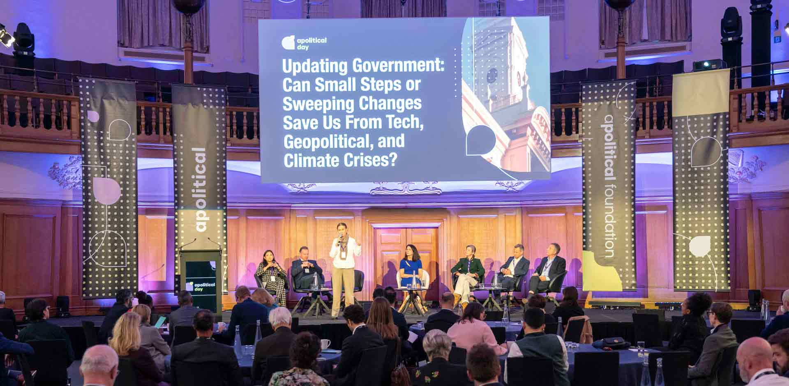
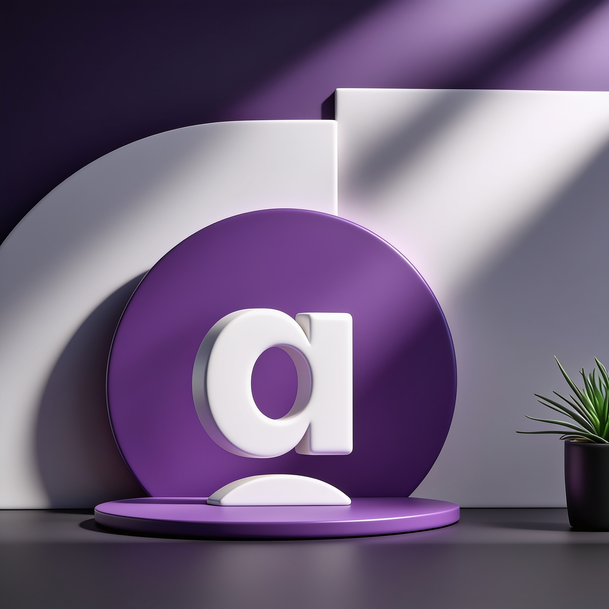

Work that connects strategy, communication and visual storytelling to drive clarity and impact.
Apolitical Day brought together influential global leaders — including HRH Mabel van Oranje, Sir Matthew Rycroft, Fiona Ryland and General Sir Nick Carter — to discuss transformative ideas shaping governance and public policy.
As the sole designer on the project, the challenge was to create a sophisticated yet accessible visual identity system that reflected the event’s authority while remaining modern, engaging and adaptable across digital and physical touchpoints.
The project translated complex institutional messaging into a cohesive brand experience through presentation design, environmental graphics, signage, social media assets and editorial communication.
As the sole designer on the project, the challenge was to create a sophisticated yet accessible visual identity system that reflected the event’s authority while remaining modern, engaging and adaptable across digital and physical touchpoints.
The project translated complex institutional messaging into a cohesive brand experience through presentation design, environmental graphics, signage, social media assets and editorial communication.
Visual Identity
/01
Event Logo Design
/02
Color Palette
/03
Typography System
/04
Editorial Layouts
/05
Presentation Templates
Brand Applications
/01
Stage Screens
/02
Event Signage
/03
Social Media Graphics
/04
Print Materials
/05
Speaker Presentation Assets